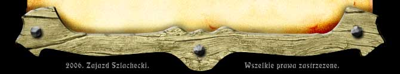

|
 |
 |
 |
 |
 |
 |
 |

 |
 |
|
Szybkie Dania Na Wynos ...na ten czas...: |
|
Przystawki Zupy Dania główne Desery i napoje |

Przystawki
| Śledzik w sosie z pomidorów i cebulki | 150 g | 12,00 zł | |||||||||||||||||||||||||||||||||||||||||||||||||||||||||||||||||||
| Słatka z grilowanym kurczakiem | 300 g | 18,00 zł | |||||||||||||||||||||||||||||||||||||||||||||||||||||||||||||||||||
| Tatar z łososia z kawiorem | 150 g | 21,00 zł | |||||||||||||||||||||||||||||||||||||||||||||||||||||||||||||||||||
| Krem dyniowo - pomidorowy z grznakami | 350 g | 10,00 zł |
| Kasztelański żurek z jajkiem | 350 g | 11,00 zł |
| Barszcz czerwony z uszkami | 350 g | 10,00 zł |
| Rosół z makaronem | 350 g | 9,00 zł |

Dania główne
| Filecik z kurczaka panierowany | 150 g | 28,00 zł |
| Grillowany filet z kurczaka z sosem czosnkowym | 150 g | 28,00 zł |
| Tradycyjny polski kotlet schabowy | 150 g | 28,00 zł |
| Grillowany schab z pieczarkami i serkiem | 180 g | 29,00 zł |
| Polędwiczka wieprzowa w podgrzybkach | 180 g | 34,00 zł |
| Soczyste żeberka wieprzowe | 150 g | 28,00 zł | Sztuka mięsa w sosie chrzanowym | 130 g | 34,00 zł |
| / Każde ww. dane serwowane jest do wyboru z: | ||
| zapiekanymi ziemniakami, frytkami, łódeczkami ziemniaczanymi | ||
| oraz kapustą zasmażaną, | ||
| buraczkami pieczonymi na szpinaku lub ogórkiem kiszonym. / | ||
| Naleśniki z serem i sosem truskawkowym | 2 szt. | 16,00 zł |
Desery i napoje
| Beza z konfiturą z pożeczki | 10,00 zł | |
| Jabłecznik i sosem karmelowym | 10,00 zł | |
Napoje
| Pepsi, Pepsi Light | 0,2l | 3,80 zł | |
| 7 Up | 0,2l | 3,80 zł | |
| Mirinda | 0,2l | 3,80 zł | |
| Tonic Schweppes | 0,2l | 3,80 zł | |
| Woda Cisowianka classique, perlage, gazowana | 0,3l | 4,50 zł | |
| Soki Toma różne smaki | 0,2l | 3,80 zł | |
Zapraszamy również do wyboru dań z głównego menukliknij tutaj
